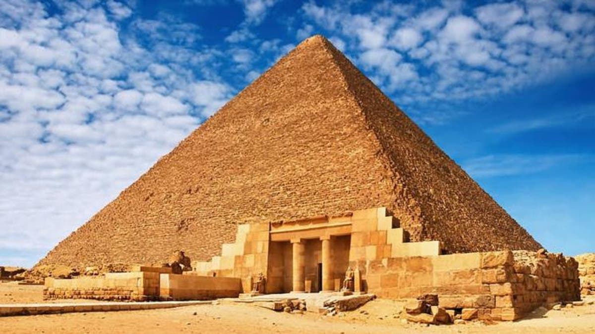
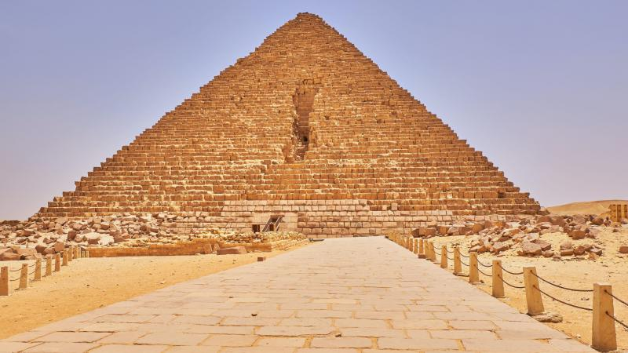
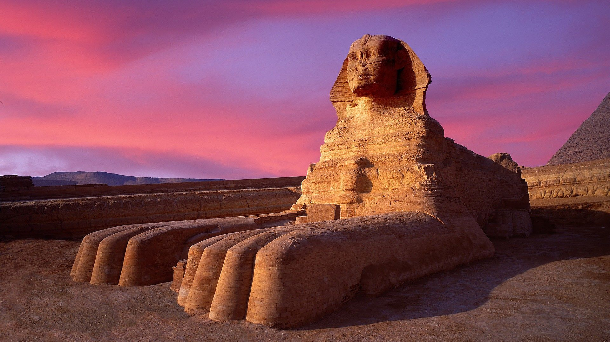

Khufu
The oldest and largest of the three pyramids. It was the tallest man-made structure for 3,800 years.
HEIGHT
146.6m
146.6m
COMPLETED
c. 2560 BC
c. 2560 BC

Khafre
The second-tallest pyramid, often appearing taller due to its higher elevation on the plateau.
HEIGHT
136.4m
136.4m
COMPLETED
c. 2570 BC
c. 2570 BC

Menkaure
The smallest of the three. Distinctive for the gaping hole on its northern face.
HEIGHT
61m
61m
COMPLETED
c. 2510 BC
c. 2510 BC

Sphinx
The Great Sphinx is a limestone statue featuring a lion's body and a human head
HEIGHT
20m
20m
COMPLETED
c. 2500 BC
c. 2500 BC